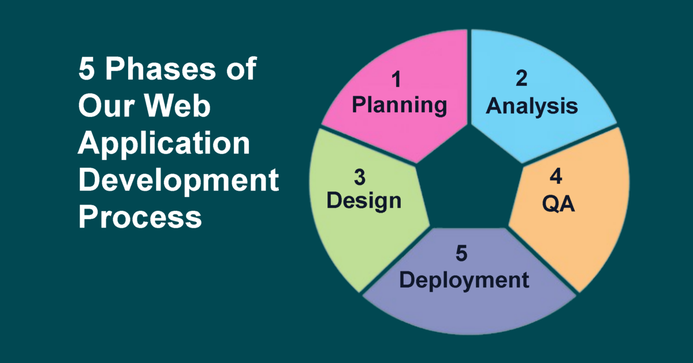

The 5 Phases of Our High-Reliability Web Application Development Process
In our software architecture and engineering practice, we follow a rigorous, proven methodology to ensure structural integrity, database optimization, and end-to-end system reliability. Here is how we guide enterprise applications from concept to production.

01. Strategic Planning & Data Modeling
A high-performing application starts with solid database architecture. Before writing code, we map out the complete data ecosystem:
- Defining core business logic, web app scope, and system objectives.
- Structuring local-first and server database schemas, identifying entities, and establishing normalized table relationships.
- Pinpointing essential enterprise reporting requirements and custom document outputs.
- Planning integration pipelines for data imports/exports, batch downloads, automated email notifications, and dynamic media handling.
02. System Analysis & Security Blueprinting
We align technological constraints with business rules to create a secure, intuitive environment:
- Designing responsive User Interfaces (UI) and optimized User Experiences (UX) with cohesive typography, layout grids, and visual hierarchy.
- Formalizing complex business logic and domain-specific validation constraints.
- Establishing Granular Role-Based Access Control (RBAC)—defining precise permission boundaries between standard users and system administrators.
- Implementation planning for database security, input sanitization, and secure authentication protocols.
03. System Design & Active Development
We translate specifications into production-grade code through disciplined execution:
- Selecting the optimal technology stack tailored for speed, resilience, and maintainability.
- Executing systematic daily development sprints to strictly hit operational milestones and project launch targets.
- Structuring comprehensive handoff documentation and administrative workflows for seamless system management.
04. Rigorous Quality Assurance & User Testing
Testing goes beyond catching bugs—it verifies performance under operational load:
- Performing end-to-end verification of database queries, data migrations, and application navigation.
- Conducting User Acceptance Testing (UAT) to resolve real-world edge cases and user feedback.
- Ensuring interface elements and control panels are intuitive and easy to navigate for all operational roles.
05. Production Deployment & Long-Term Monitoring
A successful launch marks the transition to ongoing performance and system stability:
- Executing seamless deployment to production server environments (e.g., Vercel, cloud, or hybrid infrastructure).
- Establishing continuous server monitoring, automated database backups, and health checks.
- Implementing final client enhancements and establishing a clear roadmap for long-term maintenance and system iteration.
Ready to bring your software vision to life? Contact us today to discuss your project requirements and let DataCore Systems build a custom, high-reliability web application tailored to your business needs.
Contact Us